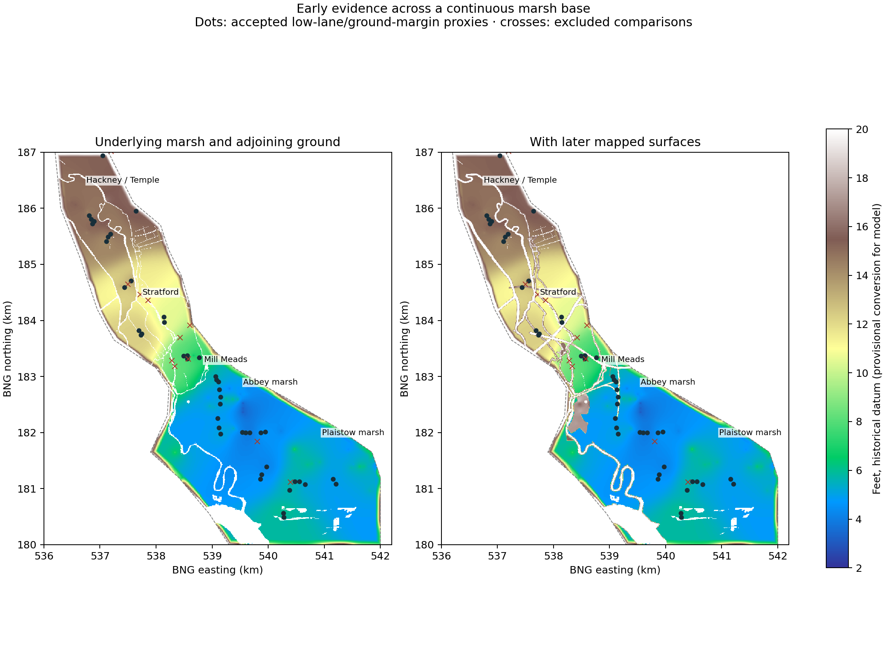

Reviewed 57 selected readings in enlarged source crops and regional map context. Forty-five low-lane or ground-margin readings inform the marsh estimate; twelve bank, bridge, major-road, benchmark or terrace comparisons are excluded. This is a selected regional analysis, not a completed transcription of the 857 cached early mosaics. Most accepted readings are proxies along low lanes, not measurements in field interiors.
Regional levels in the original feet
Ranges describe the accepted observations; medians summarize each group, not a mandated flat level. The model interpolates the individual positions. Ordinary low lanes receive no blanket fill deduction.
| Region | Readings | Range (ft) | Median (ft) | Interpretation |
|---|---|---|---|---|
| Hackney Marsh / Temple Mills | 8 | 13.5–15.4 | 14.8 | Footpaths and Temple Mill/Homerton roads across Hackney Marsh, away from the river-bank path and bridge crest. Low-road proxy for regional marsh; no blanket fill subtraction. |
| Northern Leyton marsh (one point) | 1 | 15.2–15.2 | 15.2 | Marsh Lane low end distinguished from its rise toward Church Lane and the Leyton terrace. |
| Western Stratford marsh | 5 | 10.9–12.7 | 12.1 | Low path across southern Hackney/Stratford marsh or Marsh Gate Lane margin, distinct from the reservoir and river embankments. |
| Eastern Stratford marsh | 2 | 10.5–10.7 | 10.6 | Minor dead-end lane east of Waterworks River and north of the railway; low lane surface used as a marsh proxy. |
| Northern Mill Meads | 4 | 7.9–8.6 | 8.4 | Abbey Mill Lane along northern Mill Meads; lane figures around 8 ft are distinct from 15–16 ft Three Mills Wall River banks. |
| Abbey marsh, east of Abbey Creek | 9 | 4.4–5.8 | 4.7 | Low lane/path on West Ham Abbey Marsh east of Abbey Creek, beside but distinct from the North Woolwich railway. |
| Western Plaistow marsh | 8 | 3.4–4.9 | 4.1 | Star Lane/Forty Acres Lane on the low Plaistow marsh; ordinary lane surface, not the higher Barking Road or a benchmark. |
| Eastern Plaistow marsh | 6 | 4.6–5.7 | 4.95 | Green Lane/Dirty Lane/Prince Regent Lane across Plaistow Marsh; low lanes used as representative ground proxies. |
| Southern marsh / Thames approaches | 2 | 5.6–6.2 | 5.9 | Southern Green Lane across Plaistow Marsh before dock construction; not a Thames flood-wall crest. |
Stratford’s roughly 11–13 ft and northern Mill Meads’ roughly 8 ft are supported. The 4–6 ft evidence belongs mainly to Abbey/Plaistow and the southern marshes. It does not establish a uniform fall through Mill Meads: later reviewed readings of 7.7 and 7.3 ft remain valid in southern Mill Meads. The eastern Stratford pair is lower, 10.5/10.7 ft, consistent with the later 11.2/10.8 ft ground-margin evidence.
The author’s West Ham and the River Lea, especially the 1805 map and “Marshlands and Early Industry” (PDF pages 35, 42–43 and 45), establishes the broader marsh setting and later development. The regional envelope is an interpretation of that evidence, not a surveyed boundary.
One regional base, with local raised surfaces

The fully early-derived base covers 11.73 km². It uses all accepted early proxies with inverse-distance weighting, 100 m positional smoothing and a smooth 600 m distance taper, refined by later accepted marsh or independently reviewed ground observations. Sparse interiors are estimated. Modern relief and non-marsh corrections cannot propagate into this interior. A 120 m transition at the approximate outer edge blends the surrounding model into the marsh-side ground level. This strip is classified as an estimated blend, not an exact historical control surface or a flood barrier. The former isolated Pudding–City correction is now part of this broader base.
A 29.7 ft workhouse-ground reading belongs outside the marsh estimate on the Bromley side. Other unreviewed premises and embankment-foot readings are retained separately: neither an open plot nor a bank foot establishes a marsh level or a bank crest. Knobshill Cottage’s 13.9 ft garden and reviewed 17.1–18.6 ft bank margins remain local raised features.
Later surfaces fitted so far
The banks now follow continuous joined shorelines. Crest readings control profiles by distance along each bank, rather than isolated patches around dots. Unanchored components use an explicitly inferred regional crest continuation. Railways retain their existing continuous station grades, including junction approaches, where no verified rail level is available. The sewer includes its full flat crest and side slopes, the High Street cover profile and separate elevated spans. Bridge decks do not fill the water or become ground barriers. Feature footprints below can overlap and are not additive.
| Feature | Contributing readings | Modelled footprint (m²) | Method |
|---|---|---|---|
| Abbey Lane | 3 | 3,600 | Mapped street corridor; accepted street levels within 120 m, no water-crossing fit. Width includes 3 m grid allowance. |
| Mill Mead riverbank path | 1 | 900 | Mapped street corridor; accepted street levels within 120 m, no water-crossing fit. Width includes 3 m grid allowance. |
| Stratford High Street | 2 | 900 | Mapped street corridor; accepted street levels within 120 m, no water-crossing fit. Width includes 3 m grid allowance. |
| Mill Meads works road | 2 | 3,200 | Mapped street corridor; accepted street levels within 120 m, no water-crossing fit. Width includes 3 m grid allowance. |
| Abbey Road | 1 | 900 | Mapped street corridor; accepted street levels within 120 m, no water-crossing fit. Width includes 3 m grid allowance. |
| Manor Road — drainage crossing | 3 | 1,900 | Mapped street corridor; accepted street levels within 120 m, no water-crossing fit. Width includes 3 m grid allowance. |
| Howard & Sons | 2 | 12,500 | Same mapped premises only; yard readings within 180 m; 8 m estimated edge transition. No level inferred from a building benchmark. |
| St. Leonard's Wharf (Oil Works) | 1 | 8,600 | Same mapped premises only; yard readings within 180 m; 8 m estimated edge transition. No level inferred from a building benchmark. |
| Gas Works | 8 | 167,000 | Same mapped premises only; yard readings within 180 m; 8 m estimated edge transition. No level inferred from a building benchmark. |
| Continuous river and canal banks | 77 | 881,118 | Continuous union-shoreline profile; levels interpolate by along-bank chainage. Unanchored components use an explicitly inferred regional crest continuation. Confluences and source-window openings remain open. |
| Great Eastern Railway, Woolwich branch | 0 | 40,426 | Continuous formation profile along the mapped route. Direct railway readings interpolate by chainage without a distance cut-off; no readings means the existing interpreted station grades, including graded junction connections. Mapped water crossings remain openings in the earthwork. |
| London, Tilbury and Southend Railway | 0 | 25,898 | Continuous formation profile along the mapped route. Direct railway readings interpolate by chainage without a distance cut-off; no readings means the existing interpreted station grades, including graded junction connections. Mapped water crossings remain openings in the earthwork. |
| London, Tilbury and Southend Railway — bridge spans | 0 | 449 | Raised railway deck over mapped water and explicit bridge intervals; visual cover only, excluded from ground raster and hydraulic barriers. |
| Abbey Mills junction curve | 0 | 12,930 | Continuous formation profile along the mapped route. Direct railway readings interpolate by chainage without a distance cut-off; no readings means the existing interpreted station grades, including graded junction connections. Mapped water crossings remain openings in the earthwork. |
| Great Eastern Railway — main line | 0 | 81,559 | Continuous formation profile along the mapped route. Direct railway readings interpolate by chainage without a distance cut-off; no readings means the existing interpreted station grades, including graded junction connections. Mapped water crossings remain openings in the earthwork. |
| Great Eastern Railway — main line — bridge spans | 0 | 2,860 | Raised railway deck over mapped water and explicit bridge intervals; visual cover only, excluded from ground raster and hydraulic barriers. |
| Great Eastern Railway — Woolwich branch northern connection | 0 | 30,344 | Continuous formation profile along the mapped route. Direct railway readings interpolate by chainage without a distance cut-off; no readings means the existing interpreted station grades, including graded junction connections. Mapped water crossings remain openings in the earthwork. |
| Great Eastern Railway — Woolwich branch northern connection — bridge spans | 0 | 633 | Raised railway deck over mapped water and explicit bridge intervals; visual cover only, excluded from ground raster and hydraulic barriers. |
| North London / Victoria Park branch connection | 0 | 55,395 | Continuous formation profile along the mapped route. Direct railway readings interpolate by chainage without a distance cut-off; no readings means the existing interpreted station grades, including graded junction connections. Mapped water crossings remain openings in the earthwork. |
| North London / Victoria Park branch connection — bridge spans | 0 | 779 | Raised railway deck over mapped water and explicit bridge intervals; visual cover only, excluded from ground raster and hydraulic barriers. |
| Northern Outfall Sewer — full crest and banks | 0 | 139,575 | Continuous full-width sewer cover and side slopes on the existing centreline, including inferred end extension. Existing smooth High Street cover profile retained; no sewer invert inferred. |
| Northern Outfall Sewer — water spans | 0 | 1,087 | Continuous elevated sewer cover over mapped rivers. Separate deck geometry, not a ground fill or hydraulic barrier. |
Remaining geometry and evidence gaps
Within the early-derived interior, the following high-confidence, undisputed later spot readings are available. “Matched” means actually contributing to one of the mapped layer fits above. Unmatched readings remain in the evidence inventory; they do not create arbitrary elevated patches. The separate cottage/bank review is recorded in the landscape provenance rather than these counts.
| Surface | Available readings | Matched | Unmatched |
|---|---|---|---|
| bank-or-embankment | 59 | 33 | 26 |
| railway | 17 | 0 | 17 |
| road | 349 | 7 | 342 |
| wall | 34 | 17 | 17 |
| yard | 52 | 11 | 41 |
Next geometry priorities are the streets, industrial plots and additional railway alignments represented by unmatched points. Buildings alone do not establish yard fill height. Continuous banks and the mapped railway/sewer routes now have a separate fine mesh with 4 m edge sampling; the 10 m raster alone cannot encode their hydraulic topology. The 11.3 ft point north of the LT&SR was checked on the source map and excluded as a rail-formation control: it lies on the footpath beside the railway. The main industrial reconstruction now uses this marsh base, continuous bank profiles, refitted railway/sewer slopes and seated buildings. Premises without yard observations retain an explicitly estimated floor. Channel beds and exposed tidal mud retain their existing sections. The flood solver has not yet been recalibrated to the revised ground.
Readings and source crops
Download early readings (CSV) · Review, coordinates and source hashes (JSON) · Later surface inventory · Model provenance. Contact sheets contain six or eight numbered source panels. The expanded 6.2 ft crop provides additional context for early-056.

| ID | Region | Feet | Role | Value confidence | Source crop |
|---|---|---|---|---|---|
| early-001 | Hackney Marsh / Temple Mills | 14.6 | Proxy: lane-proxy | high | s18_131051_87113, panel 1 |
| early-002 | Hackney Marsh / Temple Mills | 14.7 | Proxy: lane-proxy | high | s18_131051_87113, panel 2 |
| early-003 | Hackney Marsh / Temple Mills | 15 | Proxy: lane-proxy | high | s18_131051_87113, panel 3 |
| early-004 | Hackney Marsh / Temple Mills | 14.9 | Proxy: lane-proxy | high | s18_131051_87113, panel 4 |
| early-005 | Hackney Marsh / Temple Mills | 13.5 | Proxy: lane-proxy | high | s18_131054_87116, panel 5 |
| early-006 | Hackney Marsh / Temple Mills | 13.7 | Proxy: lane-proxy | high | s18_131054_87116, panel 6 |
| early-007 | Hackney Marsh / Temple Mills | 15.2 | Proxy: lane-proxy | high | s18_131054_87116, panel 7 |
| early-008 | Western Stratford marsh | 11.6 | Proxy: lane-proxy | high | s18_131057_87125, panel 8 |
| early-009 | Western Stratford marsh | 12.9 | Excluded comparison: crossing | medium | s18_131057_87125, panel 1 |
| early-010 | Western Stratford marsh | 10.9 | Proxy: lane-proxy | high | s18_131057_87125, panel 2 |
| early-011 | Western Stratford marsh | 12.1 | Proxy: ground-margin | high | s18_131060_87134, panel 3 |
| early-012 | Western Stratford marsh | 12.4 | Proxy: lane-proxy | high | s18_131060_87134, panel 4 |
| early-013 | Western Stratford marsh | 12.7 | Proxy: lane-proxy | high | s18_131060_87134, panel 5 |
| early-014 | Eastern Stratford marsh | 10.5 | Proxy: lane-proxy | high | s18_131063_87131, panel 6 |
| early-015 | Eastern Stratford marsh | 10.7 | Proxy: lane-proxy | high | s18_131063_87131, panel 7 |
| early-016 | Northern Mill Meads | 8.4 | Proxy: lane-proxy | medium | s18_131066_87140, panel 8 |
| early-017 | Northern Mill Meads | 8.6 | Proxy: lane-proxy | medium | s18_131066_87140, panel 1 |
| early-018 | Northern Mill Meads | 8.4 | Proxy: lane-proxy | medium | s18_131066_87140, panel 2 |
| early-019 | Northern Mill Meads | 7.9 | Proxy: lane-proxy | high | s18_131069_87140, panel 3 |
| early-020 | Abbey marsh, east of Abbey Creek | 5.8 | Proxy: lane-proxy | high | s18_131072_87143, panel 4 |
| early-021 | Abbey marsh, east of Abbey Creek | 5.6 | Proxy: lane-proxy | high | s18_131072_87143, panel 5 |
| early-022 | Abbey marsh, east of Abbey Creek | 5.1 | Proxy: lane-proxy | high | s18_131072_87143, panel 6 |
| early-023 | Abbey marsh, east of Abbey Creek | 4.6 | Proxy: lane-proxy | high | s18_131072_87146, panel 7 |
| early-024 | Abbey marsh, east of Abbey Creek | 4.6 | Proxy: lane-proxy | high | s18_131072_87146, panel 8 |
| early-025 | Abbey marsh, east of Abbey Creek | 4.5 | Proxy: lane-proxy | high | s18_131072_87146, panel 1 |
| early-026 | Abbey marsh, east of Abbey Creek | 4.4 | Proxy: lane-proxy | high | s18_131072_87152, panel 2 |
| early-027 | Abbey marsh, east of Abbey Creek | 4.7 | Proxy: lane-proxy | high | s18_131072_87152, panel 3 |
| early-028 | Abbey marsh, east of Abbey Creek | 5 | Proxy: lane-proxy | high | s18_131072_87152, panel 4 |
| early-029 | Western Plaistow marsh | 3.9 | Proxy: lane-proxy | high | s18_131078_87155, panel 5 |
| early-030 | Western Plaistow marsh | 3.4 | Proxy: lane-proxy | high | s18_131078_87155, panel 6 |
| early-031 | Western Plaistow marsh | 3.8 | Proxy: lane-proxy | high | s18_131078_87155, panel 7 |
| early-032 | Western Plaistow marsh | 4.7 | Proxy: lane-proxy | high | s18_131081_87155, panel 8 |
| early-033 | Western Plaistow marsh | 4.7 | Proxy: lane-proxy | high | s18_131081_87155, panel 1 |
| early-034 | Western Plaistow marsh | 4 | Proxy: lane-proxy | high | s18_131081_87161, panel 2 |
| early-035 | Western Plaistow marsh | 4.2 | Proxy: lane-proxy | high | s18_131081_87161, panel 3 |
| early-036 | Western Plaistow marsh | 4.9 | Proxy: lane-proxy | high | s18_131081_87161, panel 4 |
| early-037 | Eastern Plaistow marsh | 5.7 | Proxy: lane-proxy | high | s18_131087_87164, panel 5 |
| early-038 | Eastern Plaistow marsh | 5.2 | Proxy: lane-proxy | high | s18_131087_87164, panel 6 |
| early-039 | Eastern Plaistow marsh | 5.6 | Proxy: lane-proxy | high | s18_131087_87164, panel 7 |
| early-040 | Eastern Plaistow marsh | 4.7 | Proxy: lane-proxy | high | s18_131087_87164, panel 8 |
| early-041 | Eastern Plaistow marsh | 4.6 | Proxy: lane-proxy | high | s18_131093_87164, panel 1 |
| early-042 | Eastern Plaistow marsh | 4.7 | Proxy: lane-proxy | high | s18_131093_87164, panel 2 |
| early-043 | Northern Mill Meads | 15.9 | Excluded comparison: bank | high | s18_131066_87140, panel 3 |
| early-044 | Northern Mill Meads | 16.4 | Excluded comparison: bank | high | s18_131066_87140, panel 4 |
| early-045 | Western Stratford marsh | 15.3 | Excluded comparison: bank | high | s18_131060_87128, panel 5 |
| early-046 | Western Stratford marsh | 15.4 | Excluded comparison: bank | high | s18_131060_87128, panel 6 |
| early-047 | Eastern Stratford marsh | 16.8 | Excluded comparison: major-road | high | s18_131066_87134, panel 7 |
| early-048 | Eastern Stratford marsh | 18.4 | Excluded comparison: major-road | high | s18_131066_87134, panel 8 |
| early-049 | Northern Mill Meads | 8.5 | Excluded comparison: benchmark | high | s18_131069_87140, panel 1 |
| early-050 | Western Plaistow marsh | 9.2 | Excluded comparison: major-road | high | s18_131081_87155, panel 2 |
| early-051 | Eastern Plaistow marsh | 9.4 | Excluded comparison: benchmark | high | s18_131087_87164, panel 3 |
| early-052 | Northern Leyton marsh (one point) | 15.2 | Proxy: lane-proxy | high | s18_131054_87101, panel 1 |
| early-053 | Hackney Marsh / Temple Mills | 15.4 | Proxy: lane-proxy | high | s18_131057_87110, panel 2 |
| early-054 | Northern Leyton marsh (one point) | 28 | Excluded comparison: terrace-road | high | s18_131054_87101, panel 3 |
| early-055 | Northern Leyton marsh (one point) | 38.5 | Excluded comparison: terrace-road | high | s18_131054_87101, panel 4 |
| early-056 | Southern marsh / Thames approaches | 6.2 | Proxy: lane-proxy | high | s18_131084_87170, panel 1 |
| early-057 | Southern marsh / Thames approaches | 5.6 | Proxy: lane-proxy | high | s18_131084_87170, panel 6 |


Original datum is provisionally identified as OD Liverpool; the tile margins do not verify it. Model conversion is (feet − 1.3) × 0.3048 to provisional ODN. Value confidence is separate from positional and surface-role uncertainty. Approximately 3 m picking uncertainty is allowed for manually located early evidence. Thirty-centimetre accuracy is a working aim, not a demonstrated bound.